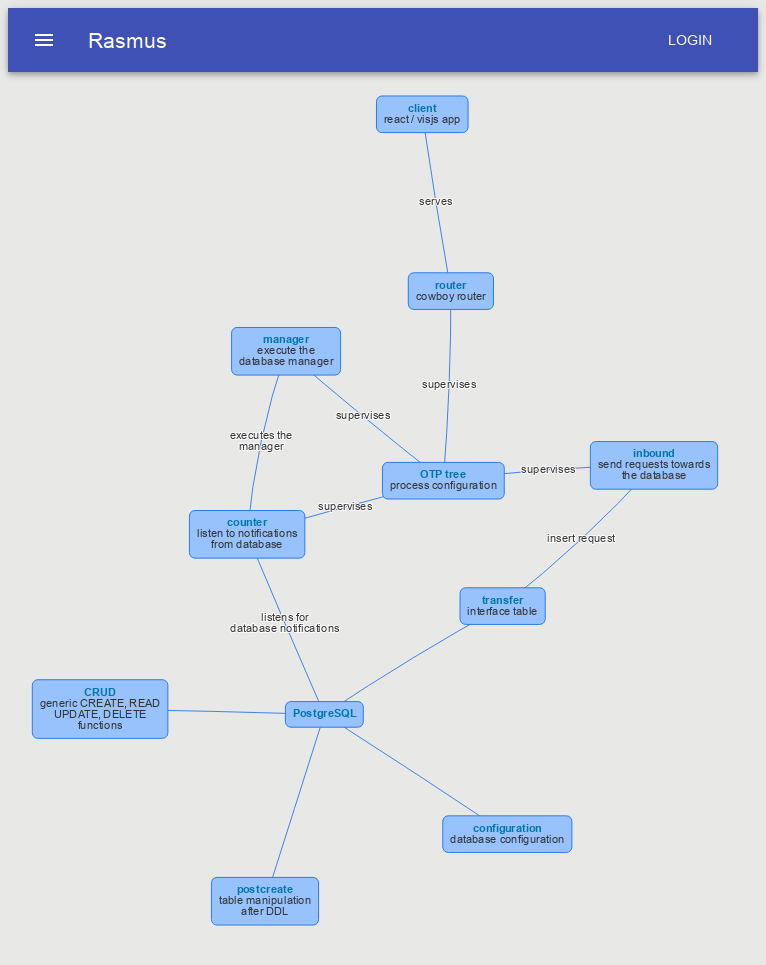

first steps with rasmus
Having the first parts of rasmus in motion, I started my first tests. There is no user management yet and the frontend is somehow static. So the first inserts will be made via curl.
The backchannel isn’t in place yet.
Currently you can see the result in the rasmus log. Let’s demonstrate this workflow with an example.
router
At first a user must be inserted into the database.
API_URL="http://localhost:8080/api"
curl -H "Content-Type: application/json" -X POST $API_URL -d @- <<BODY
{
"action": "add",
"entity": "user",
"data": {
"first_name": "Jan Frederik",
"last_name": "Hake",
"email_address": "jan_hake@gmx.de",
"login": "jan_hake"
}
}
BODYThe router make some simple checks on the posted json data.
post "/api" do
with {:ok, action} <- get_action_from(conn.body_params),
{:ok, entity} <- get_entity_from(conn.body_params),
{:ok, data } <- get_data_from(conn.body_params)
do
Logger.info("Got #{action} for #{entity} with #{inspect(data)}")
Core.Inbound.add(conn.body_params)
conn
|> send_resp(200, get_succeeded_response())
else
{:error, message} ->
Logger.warn("Got malformed request: #{message}")
conn
|> send_resp(422, get_error_response(message))
end
endOnly the actions in
@actions ["add","update","get","delete"]will be valid actions.
defp get_action_from(%{ "action" => action } = _body_params) do
case Enum.member?(@actions, action) do
true -> {:ok, action }
_ -> { :error, "Action '#{action}' is not valid. Valid actions are #{get_quoted(@actions)}"}
end
end
defp get_action_from(_body_params), do: { :error, "action is missing. Valid actions are #{get_quoted(@actions)}" }Otherwise you get into the error path.
The similar things will be checked for valid entities.
@entities ["user","privilege","role","link","appointment","list","graph"]
defp get_entity_from(%{ "entity" => entity } = _body_params) do
case Enum.member?(@entities, entity) do
true -> {:ok, entity }
_ -> { :error, "Entity '#{entity}' is not valid. Valid entities are #{get_quoted(@entities)}" }
end
end
defp get_entity_from(_body_params), do: { :error, "entity is missing. Valid entities are #{get_quoted(@entities)}" }A helper function will make some pretty stuff with the error message.
# get_quoted(["a","b"]) -> 'a', 'b'
defp get_quoted(strings) do
strings
|> Enum.map(fn(x) -> "\'#{x}\'" end)
|> Enum.join(", ")
endIf everything has worked as expected,
Core.Inbound.add(conn.body_params)will add the entity into the database.
Inbound
The inbound GenServer has the task, to insert entities into the database.
def handle_cast({:add, payload}, state) do
case Postgrex.query(state, "INSERT INTO rasmus.transfer (request) VALUES ($1)", [payload]) do
{:ok, result} -> Logger.debug("added into transfer: #{inspect(result)}")
{:error, error} -> Logger.error("adding into transfer failed: #{inspect(error)}. Tried to add #{inspect(payload)}")
end
{:noreply, state }
endThe client function
def add(entity) do
GenServer.cast(:inbound_worker, {:add, entity})
endis called from the router.
transfer
The transfer table it self is quiet simple
CREATE TABLE transfer(
id UUID NOT NULL PRIMARY KEY DEFAULT gen_random_uuid(),
state transfer_state NOT NULL DEFAULT 'pending',
request JSONB NOT NULL,
response JSONB
);When a request is inserted, a notification will be send to the backend.
CREATE FUNCTION send_message(id UUID, state transfer_state, request JSONB, response JSONB) RETURNS VOID AS $$
DECLARE
message_response JSONB;
BEGIN
message_response := '[]' || (
jsonb_build_object('id', id) ||
jsonb_build_object('state', state) ||
jsonb_build_object('action', request->>'action') ||
jsonb_build_object('entity', request->>'entity')
);
PERFORM pg_notify('rasmus', message_response->>0);
END
$$ LANGUAGE plpgsql;
CREATE FUNCTION send_transfer_message() RETURNS TRIGGER AS $$
BEGIN
PERFORM rasmus.send_message(NEW.id, NEW.state, NEW.request, NEW.response);
RETURN NEW;
END
$$ LANGUAGE plpgsql;
CREATE TRIGGER send_receipt_trigger BEFORE INSERT ON transfer
FOR EACH ROW EXECUTE PROCEDURE send_transfer_message();At this point, it does not happen very much. This approach will reduce the inbound message queue from the inbound GenServer. Inserting a request should be as fast as possible.
counter
The counter listens to Postgres notifications,
def handle_info({:notification, pid, ref, "rasmus", payload},_) do
case Jason.decode(payload) do
{:ok , %{ "id" => id, "state" => "pending", }} -> Core.Manager.perform(id)
#
# ...
#
_ -> Logger.warn("got unhandled notification: #{inspect(payload)}")
end
{:noreply, {pid, ref}}
endand calls the corresponding manager within the database.
manager
The manager performs the CRUD tasks for every entity.
As you can see in the shortened version,
def handle_cast(transfer_id, state) do
case Postgrex.query(state, "SELECT rasmus.transfer_manager($1)", [transfer_id]) do
{:ok, %{messages: messages}} ->
if Enum.any?(messages, fn(x) -> x.severity == "WARNING" end) do
set_succeeded_with_warning_state(state, transfer_id)
else
set_succeeded_state(state,transfer_id)
end
{:error, %{postgres: %{code: :raise_exception, severity: "ERROR", message: message, hint: hint}}} ->
set_error_state(state, transfer_id)
# ...
end
{:noreply, state }
endthe state will be updated, after the manager succeeded or failed.
defp set_state(state, transfer_id, sql_function_name, state_name) do
case Postgrex.query(state, "SELECT rasmus.#{sql_function_name}($1)", [transfer_id]) do
{:ok, _} -> Logger.debug("set state '#{state_name}' for #{transfer_id} succeeded")
_ -> Logger.error("set state '#{state_name}' for #{transfer_id} failed")
end
end
defp set_error_state(state, transfer_id), do: set_state(state, transfer_id, "set_error", "error")
defp set_succeeded_state(state, transfer_id), do: set_state(state, transfer_id, "set_succeeded", "succeeded")
defp set_succeeded_with_warning_state(state, transfer_id), do: set_state(state, transfer_id, "set_succeeded_with_warning", "succeeded_with_warning")The Postgres function transfer_manager itself looks for the correct manager, and does some checks.
CREATE FUNCTION transfer_manager(transfer_id TEXT) RETURNS VOID AS $$
DECLARE
transfer_record RECORD;
transfer_response JSONB;
BEGIN
SELECT id, state, request, response FROM rasmus.transfer WHERE id = transfer_id::UUID INTO transfer_record;
CASE transfer_record.request->>'entity'
-- ...
WHEN 'user' THEN
BEGIN
SELECT rasmus.user_manager(transfer_record.request) INTO transfer_response;
PERFORM rasmus.set_response(transfer_id::UUID, transfer_response);
END;
-- ...
ELSE
BEGIN
RAISE EXCEPTION 'entity `%` unknown', transfer_record.request->>'entity'
USING HINT = 'entity must one of link, graph, appointment, list, person, role, privilege or user';
END;
END CASE;
END
$$ LANGUAGE plpgsql;It also puts the result into the response column. If you are interested, what is happening within the rasmus.user_manager you can take a look at the sources for the user_manager.
When the state changes,
CREATE TRIGGER got_response_trigger AFTER UPDATE ON transfer
FOR EACH ROW
WHEN (OLD.state IS DISTINCT FROM NEW.state)
EXECUTE PROCEDURE send_transfer_message();the counter is informed, that a request is ready for processing.
def handle_info({:notification, pid, ref, "rasmus", payload},_) do
case Jason.decode(payload) do
# ...
{:ok , %{ "id" => id, "state" => state, "entity" => entity, "action" => action }} ->
Logger.info("got a request change with state '#{state}' for action '#{action}' and entity '#{entity}' #{id}. ToDo: send message to processes using this entity.")
# ...
_ -> Logger.warn("got unhandled notification: #{inspect(payload)}")
end
{:noreply, {pid, ref}}
endAt this point, the UI can be informed about an entity change. On a single user system the entity is send back to the client, and the view will be updated. On a multi user system, multiple clients can be updated as well. In the case of rasmus, multiple users can work on the same graph at the same time.
example
As mentioned before, I added a user to the system. Now let’s take a look at a previous example.

This graph is described with graphviz code.
graph {
otp [label = "*OTP tree*\nprocess configuration", url = "https://github.com/enter-haken/rasmus/blob/master/lib/rasmus_app.ex"];
router [label ="*router*\ncowboy router", url="https://github.com/enter-haken/rasmus/blob/master/lib/web/router.ex"]
counter [label = "*counter*\nlisten to notifications\nfrom database", url = "https://github.com/enter-haken/rasmus/blob/master/lib/core/counter.ex"]
inbound [label = "*inbound*\nsend requests towards\nthe database", url = "https://github.com/enter-haken/rasmus/blob/master/lib/core/inbound.ex"]
manager [label = "*manager*\nexecute the\ndatabase manager", url = "https://github.com/enter-haken/rasmus/blob/master/lib/core/manager.ex"]
client [label = "*client*\nreact / visjs app", url = "https://github.com/enter-haken/rasmus/tree/master/frontend"]
configuration [label = "*configuration*\ndatabase configuration", url = "https://github.com/enter-haken/rasmus/tree/master/config"]
database [label = "*PostgreSQL*", url ="https://github.com/enter-haken/rasmus/tree/master/database_scripts"]
transfer [label = "*transfer*\ninterface table", url = "https://github.com/enter-haken/rasmus/blob/master/database_scripts/transfer.sql"]
postcreate [label = "*postcreate*\ntable manipulation\nafter DDL", url = "https://github.com/enter-haken/rasmus/blob/master/database_scripts/postcreate.sql"]
crud [label = "*CRUD*\ngeneric CREATE, READ\nUPDATE, DELETE\nfunctions", url = "https://github.com/enter-haken/rasmus/blob/master/database_scripts/crud.sql"]
otp -- router [ label = "supervises"]
otp -- counter [ label = "supervises"]
otp -- inbound [ label = "supervises"]
otp -- manager [ label = "supervises"]
counter -- manager [ label = "executes the\nmanager"]
counter -- database [ label ="listens for\ndatabase notifications"]
router -- client [label = "serves"]
inbound -- transfer [label = "insert request"]
database -- transfer
database -- postcreate
database -- configuration
database -- crud
}Due to there is no frontend, let’s make some curl stuff.
$ curl -H "Content-Type: application/json" -X POST $API_URL -d @- <<BODY
{
"action": "add",
"entity": "user",
"data": {
"first_name": "Jan Frederik",
"last_name": "Hake",
"email_address": "jan_hake@gmx.de",
"login": "jan_hake"
}
}
BODYLog entries:
14:35:11.041 module=Plug.Logger [info] POST /api
14:35:11.056 module=Web.Router [info] Got add for user with %{"email_address" => "jan_hake@gmx.de", "first_name" => "Jan Frederik", "last_name" => "Hake", "login" => "jan_hake"}
14:35:11.058 module=Plug.Logger [info] Sent 200 in 17ms
14:35:11.063 module=Core.Manager [info] perform transfer_manager for transfer id: 87e8bed2-72ad-44aa-9dfe-ff7e69883df1
14:35:11.067 module=Core.Inbound [debug] added into transfer: %Postgrex.Result{columns: nil, command: :insert, connection_id: 4528, messages: [], num_rows: 1, rows: nil}
14:35:11.110 module=Core.Manager [debug] set state 'succeeded' for 87e8bed2-72ad-44aa-9dfe-ff7e69883df1 succeeded
14:35:11.110 module=Core.Manager [debug] manager succeeded: %{notice: ["crypted password: $2a$06$g6YczlE0qjE6dZbLNn4tLewaL80Bx5Pms/IONU8kblzNTQjFTU1zO", "salt: $2a$06$g6YczlE0qjE6dZbLNn4tLe", "blank password: $2a$06$Nbp0YIoQkPykTQMmVdgWbO", "INSERT INTO rasmus.user (email_address, login, last_name, first_name) VALUES ('jan_hake@gmx.de', 'jan_hake', 'Hake', 'Jan Frederik') RETURNING id;"]}
14:35:11.110 module=Core.Counter [warn] got unhandled notification: "{\"id\": \"87e8bed2-72ad-44aa-9dfe-ff7e69883df1\", \"state\": \"succeeded\", \"action\": \"add\", \"entity\": \"user\"}"(hint: the stuff with the password won’t stay this way. it is just some dummy stuff.)
The user is currently necessary for the owner association. The user_id must be stored for the the next calls.
USER_ID=`psql -U postgres -d rasmus -c "select id from rasmus.user" | sed -e '1,2d' -e '4,5d' -e 's/^ //'`Now we take the user and add some links.
curl -H "Content-Type: application/json" -X POST $API_URL -d @- <<BODY
{
"action": "add",
"entity": "link",
"data": {
"id_owner": "$USER_ID",
"name": "otp tree",
"description": "process configuration",
"url": "https://github.com/enter-haken/rasmus/blob/master/lib/rasmus_app.ex"
}
}
BODY
curl -H "Content-Type: application/json" -X POST $API_URL -d @- <<BODY
{
"action": "add",
"entity": "link",
"data": {
"id_owner": "$USER_ID",
"name": "router",
"description": "cowboy router",
"url": "https://github.com/enter-haken/rasmus/blob/master/lib/web/router.ex"
}
}
BODY
...The link is stored into the database.
CREATE TABLE "link"(
id UUID NOT NULL PRIMARY KEY DEFAULT gen_random_uuid(),
id_owner UUID NOT NULL REFERENCES "user"(id) ON DELETE CASCADE,
name VARCHAR(80) UNIQUE NOT NULL,
description VARCHAR(254),
url VARCHAR(2048),
json_view JSONB
);The json_view column is populated, when it is needed for the first time. All necessary functions can be found in the database script.
Log entries:
14:38:28.319 module=Plug.Logger [info] POST /api
14:38:28.319 module=Web.Router [info] Got add for link with %{"description" => "process configuration", "id_owner" => "fed1e016-0730-4d04-b6cd-bdd8da676e76", "name" => "otp tree", "url" => "https://github.com/enter-haken/rasmus/blob/master/lib/rasmus_app.ex"}
14:38:28.319 module=Plug.Logger [info] Sent 200 in 487µs
14:38:28.324 module=Core.Inbound [debug] added into transfer: %Postgrex.Result{columns: nil, command: :insert, connection_id: 5768, messages: [], num_rows: 1, rows: nil}
14:38:28.324 module=Core.Manager [info] perform transfer_manager for transfer id: e2fe6b9c-18ec-436d-97a1-2153243c90fb
14:38:28.331 module=Plug.Logger [info] POST /api
14:38:28.332 module=Web.Router [info] Got add for link with %{"description" => "cowboy router", "id_owner" => "fed1e016-0730-4d04-b6cd-bdd8da676e76", "name" => "router", "url" => "https://github.com/enter-haken/rasmus/blob/master/lib/web/router.ex"}
14:38:28.332 module=Plug.Logger [info] Sent 200 in 462µs
14:38:28.334 module=Core.Inbound [debug] added into transfer: %Postgrex.Result{columns: nil, command: :insert, connection_id: 5768, messages: [], num_rows: 1, rows: nil}
14:38:28.340 module=Plug.Logger [info] POST /api
14:38:28.340 module=Web.Router [info] Got add for link with %{"description" => "listen to notifications\nfrom database", "id_owner" => "fed1e016-0730-4d04-b6cd-bdd8da676e76", "name" => "counter", "url" => "https://github.com/enter-haken/rasmus/blob/master/lib/core/counter.ex"}
14:38:28.340 module=Plug.Logger [info] Sent 200 in 292µs
14:38:28.340 module=Core.Manager [debug] set state 'succeeded' for e2fe6b9c-18ec-436d-97a1-2153243c90fb succeeded
14:38:28.341 module=Core.Manager [debug] manager succeded: %{notice: ["INSERT INTO rasmus.link (url, name, description, id_owner) VALUES ('https://github.com/enter-haken/rasmus/blob/master/lib/rasmus_app.ex', 'otp tree', 'process configuration', 'fed1e016-0730-4d04-b6cd-bdd8da676e76') RETURNING id;"]}
14:38:28.341 module=Core.Manager [info] perform transfer_manager for transfer id: 44c832eb-b034-4e4f-884c-4d20c3da6fa1
14:38:28.341 module=Core.Counter [warn] got unhandled notification: "{\"id\": \"e2fe6b9c-18ec-436d-97a1-2153243c90fb\", \"state\": \"succeeded\", \"action\": \"add\", \"entity\": \"link\"}"
14:38:28.342 module=Core.Inbound [debug] added into transfer: %Postgrex.Result{columns: nil, command: :insert, connection_id: 5768, messages: [], num_rows: 1, rows: nil}
14:38:28.346 module=Plug.Logger [info] POST /api
14:38:28.346 module=Web.Router [info] Got add for link with %{"description" => "send requests towards\nthe database", "id_owner" => "fed1e016-0730-4d04-b6cd-bdd8da676e76", "name" => "inbound", "url" => "https://github.com/enter-haken/rasmus/blob/master/lib/core/inbound.ex"}
14:38:28.346 module=Plug.Logger [info] Sent 200 in 220µs
14:38:28.347 module=Core.Inbound [debug] added into transfer: %Postgrex.Result{columns: nil, command: :insert, connection_id: 5768, messages: [], num_rows: 1, rows: nil}
14:38:28.350 module=Core.Manager [debug] set state 'succeeded' for 44c832eb-b034-4e4f-884c-4d20c3da6fa1 succeeded
14:38:28.350 module=Core.Manager [debug] manager succeded: %{notice: ["INSERT INTO rasmus.link (url, name, description, id_owner) VALUES ('https://github.com/enter-haken/rasmus/blob/master/lib/web/router.ex', 'router', 'cowboy router', 'fed1e016-0730-4d04-b6cd-bdd8da676e76') RETURNING id;"]}
14:38:28.350 module=Core.Manager [info] perform transfer_manager for transfer id: 1812a173-715c-4d7f-9983-29706dc5174b
14:38:28.350 module=Core.Counter [warn] got unhandled notification: "{\"id\": \"44c832eb-b034-4e4f-884c-4d20c3da6fa1\", \"state\": \"succeeded\", \"action\": \"add\", \"entity\": \"link\"}"
14:38:28.350 module=Plug.Logger [info] POST /api
14:38:28.350 module=Web.Router [info] Got add for link with %{"description" => "execute the\ndatabase manager", "id_owner" => "fed1e016-0730-4d04-b6cd-bdd8da676e76", "name" => "manager", "url" => "https://github.com/enter-haken/rasmus/blob/master/lib/core/manager.ex"}
14:38:28.350 module=Plug.Logger [info] Sent 200 in 175µs
14:38:28.352 module=Core.Inbound [debug] added into transfer: %Postgrex.Result{columns: nil, command: :insert, connection_id: 5768, messages: [], num_rows: 1, rows: nil}
14:38:28.354 module=Plug.Logger [info] POST /api
14:38:28.354 module=Web.Router [info] Got add for link with %{"description" => "react / visjs app", "id_owner" => "fed1e016-0730-4d04-b6cd-bdd8da676e76", "name" => "client", "url" => "https://github.com/enter-haken/rasmus/blob/master/lib/core/manager.ex"}
14:38:28.354 module=Plug.Logger [info] Sent 200 in 223µs
14:38:28.359 module=Plug.Logger [info] POST /api
14:38:28.359 module=Web.Router [info] Got add for link with %{"description" => "database configuration", "id_owner" => "fed1e016-0730-4d04-b6cd-bdd8da676e76", "name" => "configuration", "url" => "https://github.com/enter-haken/rasmus/tree/master/config"}
14:38:28.359 module=Plug.Logger [info] Sent 200 in 157µs
14:38:28.360 module=Core.Inbound [debug] added into transfer: %Postgrex.Result{columns: nil, command: :insert, connection_id: 5768, messages: [], num_rows: 1, rows: nil}
14:38:28.361 module=Core.Manager [debug] set state 'succeeded' for 1812a173-715c-4d7f-9983-29706dc5174b succeeded
14:38:28.361 module=Core.Manager [debug] manager succeded: %{notice: ["INSERT INTO rasmus.link (url, name, description, id_owner) VALUES ('https://github.com/enter-haken/rasmus/blob/master/lib/core/counter.ex', 'counter', 'listen to notifications\nfrom database', 'fed1e016-0730-4d04-b6cd-bdd8da676e76') RETURNING id;"]}
14:38:28.361 module=Core.Manager [info] perform transfer_manager for transfer id: 00039c03-2b12-42ee-b0ee-4f3251eba820
14:38:28.361 module=Core.Counter [warn] got unhandled notification: "{\"id\": \"1812a173-715c-4d7f-9983-29706dc5174b\", \"state\": \"succeeded\", \"action\": \"add\", \"entity\": \"link\"}"
14:38:28.362 module=Core.Inbound [debug] added into transfer: %Postgrex.Result{columns: nil, command: :insert, connection_id: 5768, messages: [], num_rows: 1, rows: nil}
14:38:28.363 module=Plug.Logger [info] POST /api
14:38:28.363 module=Web.Router [info] Got add for link with %{"id_owner" => "fed1e016-0730-4d04-b6cd-bdd8da676e76", "name" => "database", "url" => "https://github.com/enter-haken/rasmus/tree/master/database_scripts"}
14:38:28.363 module=Plug.Logger [info] Sent 200 in 163µs
14:38:28.365 module=Core.Inbound [debug] added into transfer: %Postgrex.Result{columns: nil, command: :insert, connection_id: 5768, messages: [], num_rows: 1, rows: nil}
14:38:28.367 module=Plug.Logger [info] POST /api
14:38:28.367 module=Web.Router [info] Got add for link with %{"description" => "interface table", "id_owner" => "fed1e016-0730-4d04-b6cd-bdd8da676e76", "name" => "transfer", "url" => "https://github.com/enter-haken/rasmus/blob/master/database_scripts/transfer.sql"}
14:38:28.367 module=Plug.Logger [info] Sent 200 in 157µs
14:38:28.368 module=Core.Inbound [debug] added into transfer: %Postgrex.Result{columns: nil, command: :insert, connection_id: 5768, messages: [], num_rows: 1, rows: nil}
14:38:28.369 module=Core.Manager [debug] set state 'succeeded' for 00039c03-2b12-42ee-b0ee-4f3251eba820 succeeded
14:38:28.369 module=Core.Manager [debug] manager succeded: %{notice: ["INSERT INTO rasmus.link (url, name, description, id_owner) VALUES ('https://github.com/enter-haken/rasmus/blob/master/lib/core/inbound.ex', 'inbound', 'send requests towards\nthe database', 'fed1e016-0730-4d04-b6cd-bdd8da676e76') RETURNING id;"]}
14:38:28.369 module=Core.Manager [info] perform transfer_manager for transfer id: 488b40d5-e364-413b-b796-5706533b36ed
14:38:28.369 module=Core.Counter [warn] got unhandled notification: "{\"id\": \"00039c03-2b12-42ee-b0ee-4f3251eba820\", \"state\": \"succeeded\", \"action\": \"add\", \"entity\": \"link\"}"
14:38:28.371 module=Plug.Logger [info] POST /api
14:38:28.371 module=Web.Router [info] Got add for link with %{"description" => "table manipulation\nafter DDL", "id_owner" => "fed1e016-0730-4d04-b6cd-bdd8da676e76", "name" => "postcreate", "url" => "https://github.com/enter-haken/rasmus/blob/master/database_scripts/postcreate.sql"}
14:38:28.371 module=Plug.Logger [info] Sent 200 in 138µs
14:38:28.372 module=Core.Inbound [debug] added into transfer: %Postgrex.Result{columns: nil, command: :insert, connection_id: 5768, messages: [], num_rows: 1, rows: nil}
14:38:28.374 module=Plug.Logger [info] POST /api
14:38:28.374 module=Web.Router [info] Got add for link with %{"description" => "generic CREATE, READ\nUPDATE, DELETE\nfunctions", "id_owner" => "fed1e016-0730-4d04-b6cd-bdd8da676e76", "name" => "crud", "url" => "https: //github.com/enter-haken/rasmus/blob/master/database_scripts/crud.sql"}
14:38:28.374 module=Plug.Logger [info] Sent 200 in 210µs
14:38:28.376 module=Core.Inbound [debug] added into transfer: %Postgrex.Result{columns: nil, command: :insert, connection_id: 5768, messages: [], num_rows: 1, rows: nil}
14:38:28.377 module=Core.Manager [debug] set state 'succeeded' for 488b40d5-e364-413b-b796-5706533b36ed succeeded
14:38:28.377 module=Core.Manager [debug] manager succeded: %{notice: ["INSERT INTO rasmus.link (url, name, description, id_owner) VALUES ('https://github.com/enter-haken/rasmus/blob/master/lib/core/manager.ex', 'manager', 'execute the\ndatabase manager', 'fed1e016-0730-4d04-b6cd-bdd8da676e76') RETURNING id;"]}
14:38:28.377 module=Core.Manager [info] perform transfer_manager for transfer id: 912e14df-ee7c-45c0-898a-895c98d1a36a
14:38:28.377 module=Core.Counter [warn] got unhandled notification: "{\"id\": \"488b40d5-e364-413b-b796-5706533b36ed\", \"state\": \"succeeded\", \"action\": \"add\", \"entity\": \"link\"}"
14:38:28.381 module=Core.Manager [debug] set state 'succeeded' for 912e14df-ee7c-45c0-898a-895c98d1a36a succeeded
14:38:28.381 module=Core.Manager [debug] manager succeded: %{notice: ["INSERT INTO rasmus.link (url, name, description, id_owner) VALUES ('https://github.com/enter-haken/rasmus/blob/master/lib/core/manager.ex', 'client', 'react / visjs app', 'fed1e016-0730-4d04-b6cd-bdd8da676e76') RETURNING id;"]}
14:38:28.381 module=Core.Manager [info] perform transfer_manager for transfer id: a3492a80-4289-46bd-bfc2-9b880af42517
14:38:28.381 module=Core.Counter [warn] got unhandled notification: "{\"id\": \"912e14df-ee7c-45c0-898a-895c98d1a36a\", \"state\": \"succeeded\", \"action\": \"add\", \"entity\": \"link\"}"
14:38:28.388 module=Core.Manager [debug] set state 'succeeded' for a3492a80-4289-46bd-bfc2-9b880af42517 succeeded
14:38:28.388 module=Core.Manager [debug] manager succeded: %{notice: ["INSERT INTO rasmus.link (url, name, description, id_owner) VALUES ('https://github.com/enter-haken/rasmus/tree/master/config', 'configuration', 'database configuration', 'fed1e016-0730-4d04-b6cd-bdd8da676e76') RETURNING id;"]}
14:38:28.388 module=Core.Manager [info] perform transfer_manager for transfer id: 1aac3309-39f0-4f4a-b92f-a89e8a49e6ba
14:38:28.388 module=Core.Counter [warn] got unhandled notification: "{\"id\": \"a3492a80-4289-46bd-bfc2-9b880af42517\", \"state\": \"succeeded\", \"action\": \"add\", \"entity\": \"link\"}"
14:38:28.392 module=Core.Manager [debug] set state 'succeeded' for 1aac3309-39f0-4f4a-b92f-a89e8a49e6ba succeeded
14:38:28.392 module=Core.Manager [debug] manager succeded: %{notice: ["INSERT INTO rasmus.link (url, name, id_owner) VALUES ('https://github.com/enter-haken/rasmus/tree/master/database_scripts', 'database', 'fed1e016-0730-4d04-b6cd-bdd8da676e76') RETURNING id;"]}
14:38:28.392 module=Core.Manager [info] perform transfer_manager for transfer id: 9feb5f68-9f97-4351-b324-7b8d8436a94f
14:38:28.392 module=Core.Counter [warn] got unhandled notification: "{\"id\": \"1aac3309-39f0-4f4a-b92f-a89e8a49e6ba\", \"state\": \"succeeded\", \"action\": \"add\", \"entity\": \"link\"}"
14:38:28.396 module=Core.Manager [debug] set state 'succeeded' for 9feb5f68-9f97-4351-b324-7b8d8436a94f succeeded
14:38:28.396 module=Core.Manager [debug] manager succeded: %{notice: ["INSERT INTO rasmus.link (url, name, description, id_owner) VALUES ('https://github.com/enter-haken/rasmus/blob/master/database_scripts/transfer.sql', 'transfer', 'interface table', 'fed1e016-0730-4d04-b6cd-bdd8da676e76') RETURNING id;"]}
14:38:28.396 module=Core.Manager [info] perform transfer_manager for transfer id: 965ff0e8-43ae-4b7d-b76e-a55bcd721058
14:38:28.396 module=Core.Counter [warn] got unhandled notification: "{\"id\": \"9feb5f68-9f97-4351-b324-7b8d8436a94f\", \"state\": \"succeeded\", \"action\": \"add\", \"entity\": \"link\"}"
14:38:28.399 module=Core.Manager [debug] set state 'succeeded' for 965ff0e8-43ae-4b7d-b76e-a55bcd721058 succeeded
14:38:28.400 module=Core.Manager [debug] manager succeded: %{notice: ["INSERT INTO rasmus.link (url, name, description, id_owner) VALUES ('https://github.com/enter-haken/rasmus/blob/master/database_scripts/postcreate.sql', 'postcreate', 'table manipulation\nafter DDL', 'fed1e016-0730-4d04-b6cd-bdd8da676e76') RETURNING id;"]}
14:38:28.400 module=Core.Manager [info] perform transfer_manager for transfer id: 161771a3-e153-44bf-89bf-42f7b5b2cd53
14:38:28.400 module=Core.Counter [warn] got unhandled notification: "{\"id\": \"965ff0e8-43ae-4b7d-b76e-a55bcd721058\", \"state\": \"succeeded\", \"action\": \"add\", \"entity\": \"link\"}"
14:38:28.406 module=Core.Manager [debug] set state 'succeeded' for 161771a3-e153-44bf-89bf-42f7b5b2cd53 succeeded
14:38:28.406 module=Core.Manager [debug] manager succeded: %{notice: ["INSERT INTO rasmus.link (url, name, description, id_owner) VALUES ('https: //github.com/enter-haken/rasmus/blob/master/database_scripts/crud.sql', 'crud', 'generic CREATE, READ\nUPDATE, DELETE\nfunctions', 'fed1e016-0730-4d04-b6cd-bdd8da676e76') RETURNING id;"]}
14:38:28.406 module=Core.Counter [warn] got unhandled notification: "{\"id\": \"161771a3-e153-44bf-89bf-42f7b5b2cd53\", \"state\": \"succeeded\", \"action\": \"add\", \"entity\": \"link\"}"As you can see, the inbound tasks are very quick. A manager task can take a while and it will report to the counter, when it is ready.
After all links are inserted you can post a get request, to get the graph.
curl -H "Content-Type: application/json" -d '{"action" : "get", "entity":"graph", "data" : { "id_owner":"'"$USER_ID"'" }}' $API_URLThe request is inserted into the transfer table and the counter will call the corresponding manager for the graph.
The result of
CREATE FUNCTION get_graph_for(raw_request JSONB) RETURNS JSONB AS $$
import json
request = json.loads(raw_request)
link_request = json.dumps({
"entity" : "link",
"action" : "get",
"data" : {
"id_owner" : request["data"]["id_owner"]
}
})
links = json.loads(plpy.execute(plpy.prepare(
"SELECT rasmus.link_get_manager($1)",["jsonb"]), [link_request])[0]["link_get_manager"])
response = {
"owner" : request["data"]["id_owner"],
"nodes" : links
}
return json.dumps(response)
$$ LANGUAGE plpython3uwill be inserted into the response column and the counter is informed, that the graph request is ready for processing.
def handle_info({:notification, pid, ref, "rasmus", payload},_) do
case Jason.decode(payload) do
# ...
{:ok , %{ "id" => id, "state" => state, "entity" => "graph", "action" => "get" }} ->
Logger.info("got a 'get' request for a graph")
Core.Entity.Graph.get(id);
# ...
_ -> Logger.warn("got unhandled notification: #{inspect(payload)}")
end
{:noreply, {pid, ref}}
endThe Core.Entity.Graph.get/1 function
def handle_cast({:get, transfer_id}, state) do
case Postgrex.query(state, "SELECT response FROM rasmus.transfer WHERE id = $1", [UUID.string_to_binary!(transfer_id)]) do
{:ok, result} -> Logger.debug("got response from transfer: #{inspect(result)}")
{:error, error} -> Logger.error("getting response from transfer failed: #{inspect(error)}. Tried to get #{inspect(transfer_id)}")
end
{:noreply, state }
end
# ...
def get(transfer_id) do
GenServer.cast(:graph, {:get, transfer_id})
endputs the result into the rasmus log.
Log entries:
...
14:44:28.126 module=Plug.Logger [info] POST /api
14:44:28.126 module=Web.Router [info] Got get for graph with %{"id_owner" => "376d0e62-2438-455a-ada6-b1a188274f38"}
...
14:44:28.156 module=Core.Counter [info] got a 'get' request for a graph
14:44:28.157 module=Core.Manager [debug] manager succeded: %{notice: ["dirty or empty ids for link: []", "SELECT id, json_view FROM rasmus.link WHERE id_owner = '376d0e62-2438-455a-ada6-b1a188274f38'", "update json_view for link 98b83cb9-5273-424f-bbd9-cd0d1b006014", "update json_view for link 606f21fa-879f-4dda-a710-31e436046d09", "update json_view for link fcea53b3-81bf-419b-8443-5944fb674c46", "update json_view for link aadd3610-c71d-48c2-983a-1c74f8ff4dd0", "update json_view for link cde93d44-1324-476d-b7ba-1b8a737ef90a", "update json_view for link 71cda2ab-4116-49f9-9dfc-3b08a3462260", "update json_view for link 890b3947-bd9e-4506-8ca5-ded220503f00", "update json_view for link 0c31d9dd-8d39-4536-85b7-0048c58dd872", "update json_view for link 8c8bbb39-7047-4260-95c4-20c0eed6c69b", "update json_view for link 78a2b625-9116-4e8d-8bf7-b3124d105d73", "update json_view for link 8c99ce4a-cea4-42e5-a991-17b2c34fa8e8", "dirty or empty ids for link: [{\"id\": \"8c99ce4a-cea4-42e5-a991-17b2c34fa8e8\"}, {\"id\": \"78a2b625-9116-4e8d-8bf7-b3124d105d73\"}, {\"id\": \"8c8bbb39-7047-4260-95c4-20c0eed6c69b\"}, {\"id\": \"0c31d9dd-8d39-4536-85b7-0048c58dd872\"}, {\"id\": \"890b3947-bd9e-4506-8ca5-ded220503f00\"}, {\"id\": \"71cda2ab-4116-49f9-9dfc-3b08a3462260\"}, {\"id\": \"cde93d44-1324-476d-b7ba-1b8a737ef90a\"}, {\"id\": \"aadd3610-c71d-48c2-983a-1c74f8ff4dd0\"}, {\"id\": \"fcea53b3-81bf-419b-8443-5944fb674c46\"}, {\"id\": \"606f21fa-879f-4dda-a710-31e436046d09\"}, {\"id\": \"98b83cb9-5273-424f-bbd9-cd0d1b006014\"}]", "SELECT id, json_view FROM rasmus.link WHERE id_owner = '376d0e62-2438-455a-ada6-b1a188274f38'"]}
14:44:28.160 module=Core.Entity.Graph [debug] got response from transfer: %Postgrex.Result{columns: ["response"], command: :select, connection_id: 7981, messages: [], num_rows: 1, rows: [[%{"nodes" => [%{"description" => "process configuration", "entity" => "link", "id" => "8c99ce4a-cea4-42e5-a991-17b2c34fa8e8", "id_owner" => "376d0e62-2438-455a-ada6-b1a188274f38", "is_dirty" => false, "name" => "otp tree", "url" => "https://github.com/enter-haken/rasmus/blob/master/lib/rasmus_app.ex"}, %{"description" => "cowboy router", "entity" => "link", "id" => "78a2b625-9116-4e8d-8bf7-b3124d105d73", "id_owner" => "376d0e62-2438-455a-ada6-b1a188274f38", "is_dirty" => false, "name" => "router", "url" => "https://github.com/enter-haken/rasmus/blob/master/lib/web/router.ex"}, %{"description" => "listen to notifications\nfrom database", "entity" => "link", "id" => "8c8bbb39-7047-4260-95c4-20c0eed6c69b", "id_owner" => "376d0e62-2438-455a-ada6-b1a188274f38", "is_dirty" => false, "name" => "counter", "url" => "https://github.com/enter-haken/rasmus/blob/master/lib/core/counter.ex"}, %{"description" => "send requests towards\nthe database", "entity" => "link", "id" => "0c31d9dd-8d39-4536-85b7-0048c58dd872", "id_owner" => "376d0e62-2438-455a-ada6-b1a188274f38", "is_dirty" => false, "name" => "inbound", "url" => "https://github.com/enter-haken/rasmus/blob/master/lib/core/inbound.ex"}, %{"description" => "execute the\ndatabase manager", "entity" => "link", "id" => "890b3947-bd9e-4506-8ca5-ded220503f00", "id_owner" => "376d0e62-2438-455a-ada6-b1a188274f38", "is_dirty" => false, "name" => "manager", "url" => "https://github.com/enter-haken/rasmus/blob/master/lib/core/manager.ex"}, %{"description" => "react / visjs app", "entity" => "link", "id" => "71cda2ab-4116-49f9-9dfc-3b08a3462260", "id_owner" => "376d0e62-2438-455a-ada6-b1a188274f38", "is_dirty" => false, "name" => "client", "url" => "https://github.com/enter-haken/rasmus/blob/master/lib/core/manager.ex"}, %{"description" => "database configuration", "entity" => "link", "id" => "cde93d44-1324-476d-b7ba-1b8a737ef90a", "id_owner" => "376d0e62-2438-455a-ada6-b1a188274f38", "is_dirty" => false, "name" => "configuration", "url" => "https://github.com/enter-haken/rasmus/tree/master/config"}, %{"description" => nil, "entity" => "link", "id" => "aadd3610-c71d-48c2-983a-1c74f8ff4dd0", "id_owner" => "376d0e62-2438-455a-ada6-b1a188274f38", "is_dirty" => false, "name" => "database", "url" => "https://github.com/enter-haken/rasmus/tree/master/database_scripts"}, %{"description" => "interface table", "entity" => "link", "id" => "fcea53b3-81bf-419b-8443-5944fb674c46", "id_owner" => "376d0e62-2438-455a-ada6-b1a188274f38", "is_dirty" => false, "name" => "transfer", "url" => "https://github.com/enter-haken/rasmus/blob/master/database_scripts/transfer.sql"}, %{"description" => "table manipulation\nafter DDL", "entity" => "link", "id" => "606f21fa-879f-4dda-a710-31e436046d09", "id_owner" => "376d0e62-2438-455a-ada6-b1a188274f38", "is_dirty" => false, "name" => "postcreate", "url" => "https://github.com/enter-haken/rasmus/blob/master/database_scripts/postcreate.sql"}, %{"description" => "generic CREATE, READ\nUPDATE, DELETE\nfunctions", "entity" => "link", "id" => "98b83cb9-5273-424f-bbd9-cd0d1b006014", "id_owner" => "376d0e62-2438-455a-ada6-b1a188274f38", "is_dirty" => false, "name" => "crud", "url" => "https: //github.com/enter-haken/rasmus/blob/master/database_scripts/crud.sql"}], "owner" => "376d0e62-2438-455a-ada6-b1a188274f38"}]]}(hint: I reseeded the database to get a cleaner log for the link inserts. the ids won’t match with the other log example)
(hint: at the time of writing, the edges are not part of the response.)
next steps
So far so good.
Currently, I am working on the adjacency lists for rasmus. You can take a look into the database scripts for the graph itself, but it is still kind of raw.